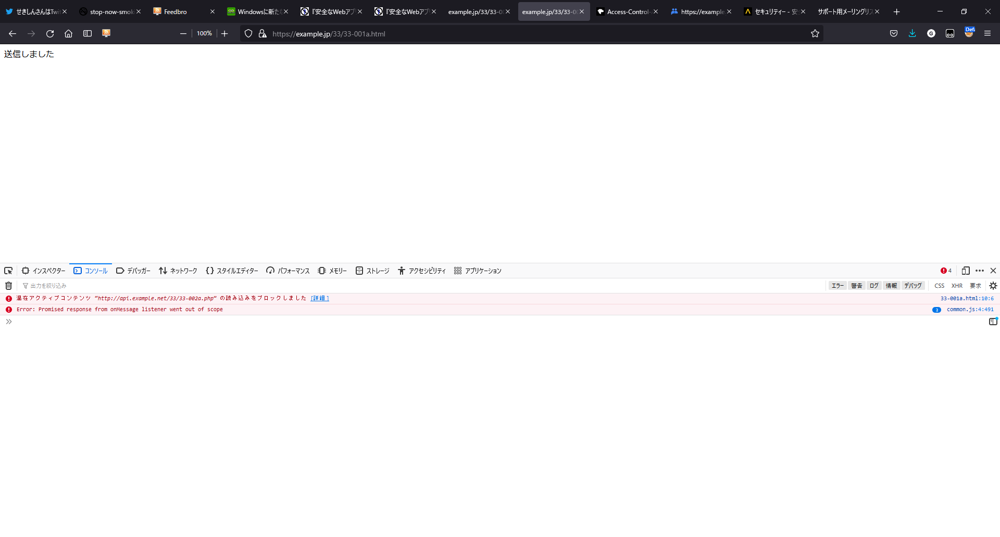
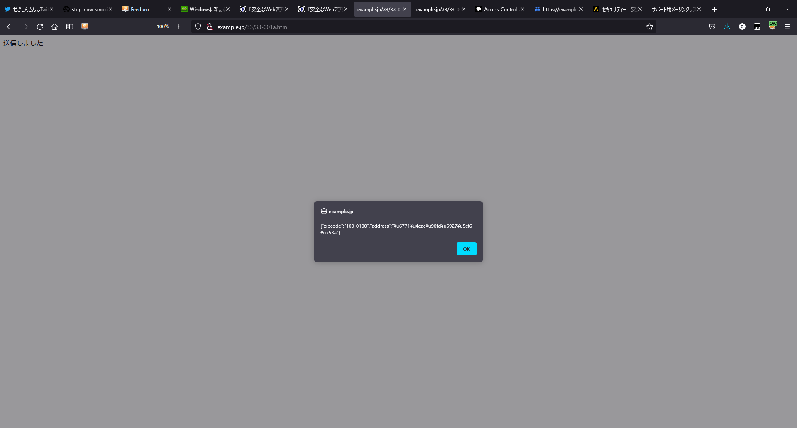
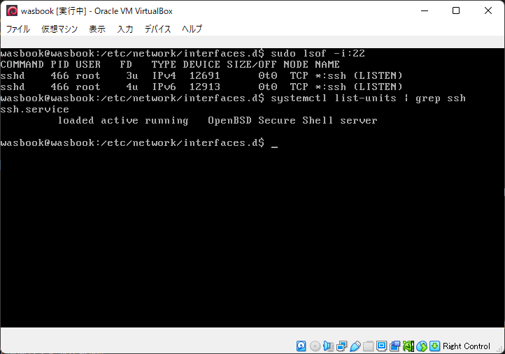
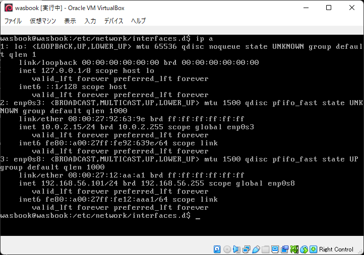
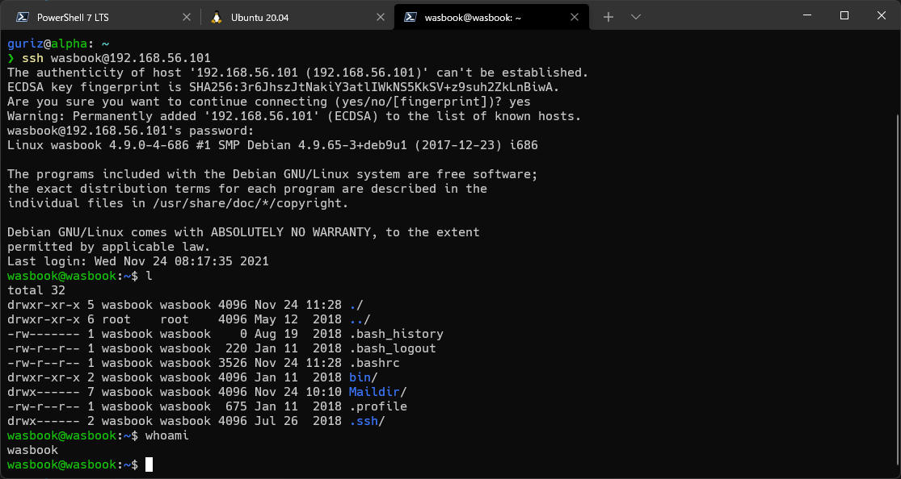

『体系的に学ぶ 安全なWebアプリケーションの作り方 第2版』読んだ
セキュリティなんも知らんので購入。
サポートサイト : https://wasbook.org/
Webアプリに対する代表的なセキュリティ攻撃とその対策を網羅する書籍。攻撃と防御の実演には、ローカルネットワークで繋げた仮想環境を用いる。
環境
- Windows 11 Pro
- バージョン : 21H2
- ビルド : 22000.318
- CPU : AMD Ryzen 7 3700X 8-Core Processor
- Hyper-V : 有効にしたまま
- VirtualBox : バージョン 6.1.30 r148432 (Qt5.6.2)
- OWASP ZAP : バージョン 2.11
- JRE : バージョン 1.8.0_311
- FireFox : バージョン 94.0.2
2章 実習環境のセットアップ
US配列キーボードを使用している場合の設定
仮想OS（wasbook）がこちらのキーボードを日本語配列として認識しているっぽいので、設定を変更する。
現在のロケール設定を確認。
$ localectl
System Locale: LANG=en_US.UTF-8
LANGUAGE=en_US:en
VC Keymap: n/a
X11 Layout: jp
X11 Model: pc101
キーマップをUS配列に変更。
# /etc/default/keyboard
XKBLAYOUT="us"
設定のリロード。
$ sudo service keyboard-setup restart
再度localectlを実行してX11 LauoutがusになってたらOK。
参考リンク
- https://wiki.archlinux.jp/index.php/%E3%82%B3%E3%83%B3%E3%82%BD%E3%83%BC%E3%83%AB%E3%81%A7%E3%81%AE%E3%82%AD%E3%83%BC%E3%83%9C%E3%83%BC%E3%83%89%E8%A8%AD%E5%AE%9A
- https://wiki.debian.org/Keyboard
OWASP ZAP v2.8.0をインストールした場合の追加設定
v2.11.0にも同様の機能があるので、それを無効化するため本書と同じように設定した。
3章 Webセキュリティの基礎
HTTPの基礎（の一部）とセッション管理の原理、クロスオリジンアクセスについて解説がなされる。
- HTTPの基礎を全体的に学習するには、本書でも参照されてる『Webを支える技術』がおすすめ。
- クッキーの説明でひっかかったけど、「名前=変数」ではなくて「変数=値」（または「識別子=値」）が正しいんじゃないか？
- P.87について、最初、本書通りの結果にならなかったが、スキームを
httpにしたら上手くいった。
httpsの場合

httpの場合

4章 Webアプリケーションの機能別に見るセキュリティバグ
ssh接続
このあたりでVirtualBoxの小さくて汚い画面がだるなってきたので、ホストOSのターミナルからゲストOSの中身を見れるようssh接続設定することにした。
まずゲストでsshが稼働しているかsudo lsof -i:22で確認。

sshデーモンがばっちり待機していた。ついでにsystemctl list-units | grep sshでなんのsshデーモンが動いているかも調べている。
次にip aでIPアドレスを調べる。

本書のとおりに設定していれば、番号が若い順にenp0s3はゲストOSがインターネット接続するためのNAT、eth0s8はホストOSがゲストOSに接続するためのホストオンリーアダプターなので、sshコマンドでホストオンリーアダプターのアドレス192.168.56.101を指定すれば繋がるはず。繋がった。

さて、ついでなので公開鍵方式でssh接続するよう設定する。
ホストOS側で公開鍵・秘密鍵を生成。
$ ssh-keygen -t ecdsa
Generating public/private ecdsa key pair.
Enter file in which to save the key (C:\Users\guriz/.ssh/id_ecdsa):
Enter passphrase (empty for no passphrase):
Enter same passphrase again:
Your identification has been saved in C:\Users\guriz/.ssh/id_ecdsa.
Your public key has been saved in C:\Users\guriz/.ssh/id_ecdsa.pub.
The key fingerprint is:
SHA256:<hoge> guriz@alpha
The key's randomart image is:
（省略）
ゲストOSに公開鍵をコピー。
$ cd $HOME/.ssh
$ scp id_ecdsa.pub wasbook@192.168.56.101:.ssh/
wasbook@192.168.56.101's password:
id_ecdsa.pub 100% 174 87.1KB/s 00:00
ゲストOSでホストOSの公開鍵を登録。
$ cd $HOME/.ssh
$ cat id_ecdsa.pub >> authorized_keys
公開鍵認証に切り替えるため、sshd_configを以下のように書き換える。
# /etc/ssh/sshd_config
PubkeyAuthentication yes
PasswordAuthntication no
設定ファイルを書き換えたので、sshdを再起動。
$ sudo systemctl restart sshd
再度、ホストOSからssh接続してみる。
$ cd $HOME/.ssh
$ ssh wasbook@192.168.56.101 -i id_ecdsa
Linux wasbook 4.9.0-4-686 #1 SMP Debian 4.9.65-3+deb9u1 (2017-12-23) i686
The programs included with the Debian GNU/Linux system are free software;
the exact distribution terms for each program are described in the
individual files in /usr/share/doc/*/copyright.
Debian GNU/Linux comes with ABSOLUTELY NO WARRANTY, to the extent
permitted by applicable law.
Last login: Wed Nov 24 21:30:39 2021 from 192.168.56.1
wasbook@wasbook:~$
これでOK。あとは毎回秘密鍵を指定するのが面倒なら、.ssh/configに接続先を書き加えればよい。
参考リンク
Webアプリケーションの機能と脆弱性の対応
- P.98の図について、最初は「入力に起因する脆弱性はない」などの文章の意味がわからなかった。「不正なHTTPリクエストの入力が起因となるからセキュリティが脅かされるのでは？」と。
- が、「HTTPリクエストがWebアプリに入力され、そこで処理されて出力されたデータがまた別のシステムへの入力となる」という見立ての元なら、まあわかる。Webアプリの処理部分がタコならHTTPリクエストが不正じゃなくてもセキュリティにとっては深刻なままということ。
入力処理とセキュリティ
入力処理として、以下の検証を行うべしという話。
- 文字エンコーディングが妥当か。
- 必要なら文字エンコーディングを変換する。
- 入力されたパラメータ文字列が妥当か。
PHPの仕様や文字列バリデーションは大変だなあと思った。
表示処理に伴う問題
表示処理が原因で発生する問題は以下。
- XSS（クロスサイト・スクリプティング）
- メタ文字のエスケープ漏れにより、任意のHTMLやJSが注入される。
- エラーメッセージからの情報漏洩
- エラーの詳細は画面じゃなくてログに吐け。
JSってやりたい放題できすぎるなあって思った。
SQL呼び出しに伴う脆弱性
- SQLインジェクション
- 文字列リテラル・数値リテラルの特性を突いて、任意のSQL文が注入される。
- 静的プレースホルダ（プリペアド・ステートメント）使え。
- エラーメッセージを画面に出すな。
SQLの文法まだまだ全然知らないなあって思った。
「重要な処理」の際に混入する脆弱性
ユーザ本人からのリクエストであることを確認する処理が抜けることによる脆弱性は以下。
- CSRF（クロスサイト・リクエストフォージェリ）
- 攻撃対象サイトにログインしているユーザが罠を踏んで攻撃リクエストが送信され、そのユーザの権限で勝手に処理が実行される。
- 一時的なトークンを埋め込め。
- 重要な処理の実行後はユーザに通知メールを送信しろ。
- クリックジャッキング
- 罠サイトの透明なiframe要素内から、攻撃対象ページを参照される。
X-Frame-Optionsレスポンスヘッダを設定しろ。
罠サイトは怖いなあって思った。
セッション管理の不備
攻撃者にセッションIDを悪用される手法は以下。
- セッションIDの推測
- Webアプリフレームワークのセッション管理機構を使え。
- セッションIDの盗み出し
- クッキー以外にセッションIDを保存するな。
- セッションIDの強制
- 認証後にセッションIDを変更しろ。
「クッキー有害論」なんてものがあったんだなあと思った。
リダイレクト処理にまつわる脆弱性
- オープンリダイレクト
- パラメータで指定した任意のドメインにリダイレクト可能な脆弱性。
- リダイレクト先は固定にしろ。
- 先にクッションページに遷移させろ。
- HTTPヘッダ・インジェクション
- 改行文字を挿入したパラメータを参照させることで、任意のHTTPレスポンスが作成可能な脆弱性。
- 外部パラメータからHTTPレスポンスヘッダを作るな。
- どうしても作りたけりゃ改行文字が入ってないかチェックしろ。
気軽にリンクを踏むのは怖いなあと思った。
クッキー出力にまつわる脆弱性
- クッキーにセキュア属性が付与されていない
- HTTPS通信であってもクッキー値を盗聴される。
- セキュア属性をつけろ。
とりあえずHTTPS通信させてセキュア属性つけときゃいいんだなあと思った。
メール送信の問題
- メールヘッダ・インジェクション
- メールの宛先や件名などヘッダフィールドに改行を挿入することで、新たなフィールドを追加したり本文を改竄する攻撃。
- 外部パラメータを使うな。
- 改行をチェックしろ。
- hiddenパラメータによる宛先保持
- hiddenパラメータを任意のアドレスに改竄され、迷惑メール送信に悪用される。
- 送信先メアドなどはサーバ上のファイルやDBなどに保管しろ。
- メールサーバによる第三者中継
- サーバ設定に問題があると第三者のメールを中継する。
ガラケー時代は迷惑メールだらけだったなあと思った。
ファイルアクセスにまつわる問題
- ディレクトリ・トラバーサル
- 外部パラメータから、アプリ側が意図しないサーバ上のファイルにアクセスされる。
- 外部パラメータにディレクトリ名が含まれないようにしろ。
- 意図しないファイル公開
- Webサーバの公開ディレクトリに非公開（のつもりの）ファイルを配置しているとアクセス可能となる。
- 配置するな。
- ディレクトリ・リスティングを無効にしろ。
ファイルをぶっこ抜かれるのは怖いなあと思った。
OSコマンド呼び出しの際に発生する脆弱性
- OSコマンド・インジェクション
- 外部パラメータから任意のOSコマンドを実行され、やりたい放題される。
- シェル呼び出し関数を使うな。
- 使うなら外部パラメータを参照するな。せめてシェルのメタ文字をエスケープしろ。
Webshellめっちゃ怖いなあと思った。
ファイルアップロードにまつわる問題
- アップロードファイルによるサーバ側スクリプト実行
- OSコマンド・インジェクションと同じような攻撃。
- ユーザがアップロードしたファイルは公開ディレクトリに配置せず、スクリプト経由で閲覧させろ。
- ファイルの拡張子を制限しろ。
- ファイルダウンロードによるXSS
- HTMLやJSスクリプトを仕込んだ画像ファイルやPDFファイルをアップロードして公開、ユーザのブラウザにこれらをHTMLとして認識させ、XSS攻撃を成立させる。
- ファイルの
Content-Typeを正しく設定しろ。 - レスポンスヘッダ
X-Content-Type-Options: nosniffを指定しろ。
ドキュメントルートの設定はちゃんとせななあと思った。
インクルードにまつわる問題
- ファイルインクルード攻撃
- インクルードするファイル名を外部から指定可能な場合に、アプリが意図しないファイルを指定することで攻撃する。
- インクルードするパス名に外部パラメータを含めるな。
- 含めるなら英数字限定にしろ。
PHPってザルすぎねえかなあって思った。
構造化データの読み込みにまつわる問題
- evalインジェクション
- 文字列をコードとして解釈・実行する機能を利用して外部から送信したスクリプトを実行する攻撃。
evalを使うな。
- 安全でないデシリアライゼーション
- デシリアライズの際に意図しないオブジェクトがアプリ内に生成され、場合によっては任意コードを実行される。
- シリアライズ形式ではなくJSON形式でデータを渡せ。
- XML外部実体参照（XXE）
- XMLデータを外部から受け取るプログラムは、外部実体参照の形でWebサーバ内部のファイルなどを不正に読み取られる。
- 外部からのデータ受け取りにXMLではなくJSONを使え。
JSONって便利だなあと思った。
共有資源やキャッシュに関する問題
- 競合状態の脆弱性
- 共有資源が不適切に利用され、別人の個人情報などを表示してしまう。
- 共有資源を避けろ。
- 排他制御しっかりやれ。
- キャッシュからの情報漏洩
- キャッシュを過剰に利用していると、別人の個人情報を表示してしまう。
- レスポンスヘッダでキャッシュを抑制しろ。
- キャッシュサーバ側でキャッシュ抑制のレスポンスヘッダを無視しないようにしろ。
リバースプロキシとかロードバランサーとか理解できてねえなあと思った。
Web API実装における脆弱性
JSONデータを返すようなWeb APIサーバにおける脆弱性は以下。
- JSONエスケープの不備
- 意図しないJSがJSONに混入し、不正実行される。
- ライブラリ関数でエスケープしろ。
- JSONPをやめてCORSに移行しろ。
- JSON直接閲覧によるXSS
- APIが返すレスポンスデータをブラウザで直接閲覧させることで攻撃する。
- MIMEタイプをちゃんと
application/jsonにしろ。 - レスポンスヘッダ
X-Content-Type-Options: nosniffを出力しろ。
- JSONPのコールバック関数によるXSS
- MIMEタイプをちゃんと
text/javascriptにしろ。 - コールバック関数名を検証しろ。
- MIMEタイプをちゃんと
- Web APIのCSRF
- CSRF対策用のトークンをJSONで返せ。
- JSONハイジャック
- ユーザの秘密情報をJSONで返している場合に、その情報をパクる攻撃。
X-Content-Type-Options: nosniffレスポンスヘッダを出力しろ。
- JSONPの不適切な利用
- JSONPを使うな。
- CORSの検証不備
Access-Control-Allow-Originにオリジンとしてなんでも許可する*を指定しちまってる。Originリクエストヘッダをちゃんと検証しろ。Access-Control-Allow-Originレスポンスヘッダをちゃんと明示しろ。
なんやかんやJSONも脆弱性あるなあって思った。
JavaScriptの問題
クライアントサイドでやらかしてしまう脆弱性。
- DOM Based XSS
- JSでDOM操作をする箇所に発生するXSS脆弱性。
- URLを検証しろ。
- HTMLのメタ文字をエスケープしろ。
- Webストレージの不適切な使用
- JSでアクセス可能な、ブラウザのストレージを狙った攻撃。
- Webストレージに秘密情報を保存するな。
- postMessageの呼び出しの不備
- 複数のウィンドウが異なるオリジンで動作する環境で、攻撃者が用意したURLにデータを送信してしまう。
- メッセージの送信元・送信先をちゃんと検証しろ。
- オープンリダイレクト
- リダイレクト先URLを動的に生成している場合に突かれる脆弱性。
- リダイレクト先のURLを固定しろ。
postMessageはなんだかWin32 APIを彷彿させるなあと思った。
5章 代表的なセキュリティ機能
認証、アカウント管理、認可、ログ出力について注意すべき事柄や実装方法を解説。具体的には「パスワードはハッシュ関数にぶちこんでからDBに保存しろ」など。
一番ためになったのはログ出力の項目。今まで作ってきたアプリでは関数名とかを適当に出力していたが、「出力項目は4W1Hを意識しろ」などの指摘がガツンときた。
6章 文字コードとセキュリティ
とりあえずUTF-8にしとけみたいな。
文字エンコーディングがきちんと設定されているかの確認方法である「尾骶骨」テストと「つちよし」テストの話が面白い。
7章 脆弱性診断入門
OpenVASによる自動脆弱性診断、OWASP ZAPによる自動・手動脆弱性診断、RIPSによるソースコード診断を体験する。
- 環境
- Nmap : ver 7.92
- OpenVASの脆弱性診断には約20分かかった。最初、プログレスバーが1%あたりから全然動かないから焦った。
- OWASP ZAPの動的スキャンは約5分。
- OWASP ZAPがスキャンした脆弱性情報をエキスポートできるらしいので、試しにmarkdown形式でエキスポートしてみたら文字化けが多すぎた。使うのならオール英語のほうがいいかも。
- データが破壊される危険性があるので、本番環境で脆弱性診断はやってはいけない。
- RIPSのソースコード診断は一瞬で終わった。
8章 Webサイトの安全性を高めるために
Webアプリではなく、サーバデーモンやネットワーク機器などミドルウェア側における脆弱性とその対策について。
- Webサーバに不要なソフトウェアは稼働させるな。
- 一般公開する必要のないポートやサービスはアクセス制限しろ。
- TelnetデーモンとFTPデーモンは停止しろ。
- sshデーモンではパスワード認証をやめて公開鍵認証にしろ。
- クラウドサービスの管理者アカウントは担当者毎に割り当て、可能なら二段階認証を設定しろ。
- 同一セグメント内に脆弱なサーバを置くな。
- すべてのコンテンツをHTTPSで通信させろ。
- SSLは脆弱性があるのでTLSを使え。
- 出所の不明なプログラムをサーバに入れるな。
- 運営に直接関係のない操作（Webやメールの閲覧など）はするな。
- USBメモリなど外部メディアを装着するな。
- Webサーバのネットワークを執務スペースのLANと切り離せ。
- サーバに接続するクライアントPCにウィルス対策ソフトを導入してパターンファイルを最新に保て。
9章 安全なWebアプリケーションのための開発マネジメント
めっちゃ斜め読みした。
雑な感想
- PHPの事情に依存している内容が多い。まあなにかしら特定の言語で記述されているほうがいいっちゃいいが、おれのような頭の悪い人間には動的型付け言語は鬼門である。
- 「mb_eregは戻り値として整数型か論理型を返す」、「filter_inputは文字列型か論理型かnullを返す」。正気の沙汰じゃねえ。やはり代数的データ型は正義。
- 個々の用語やツールの使い方などの説明は非常に丁寧。詰まることはほぼないと思われる。
- 攻撃手法を考えつくやつはすごく頭が良い。使うだけのやつはただのクズ。
- セキュリティ面だけでも考慮すべきことが多すぎて、フレームワーク使わな絶対に何かが漏れるな。
- 本書は開発者向けの書物だけど、ユーザ向けで定番のやつってあるんだろうか。親とかに読ませたいんやが。